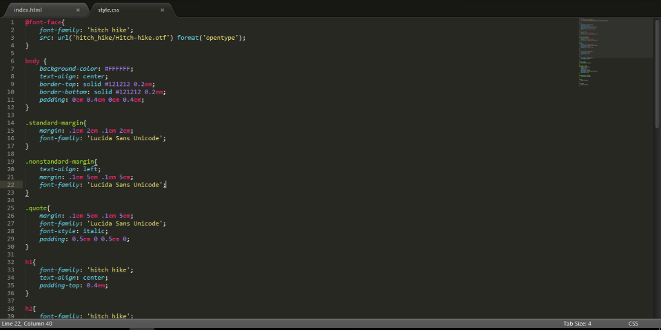
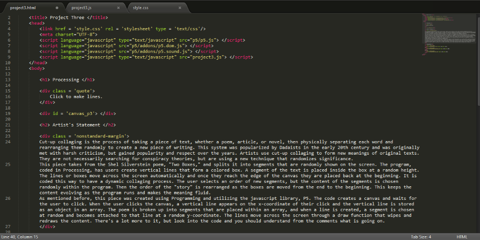
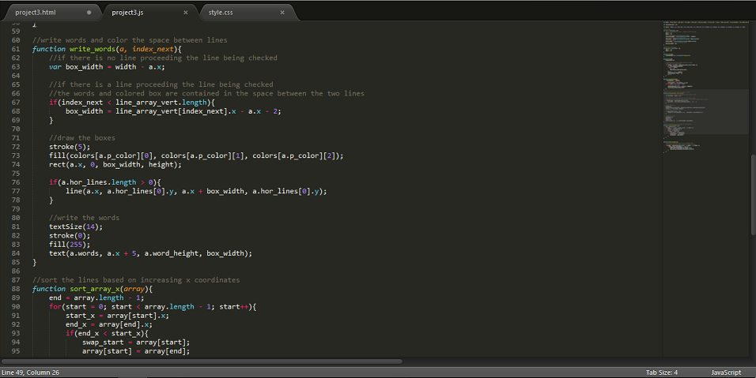
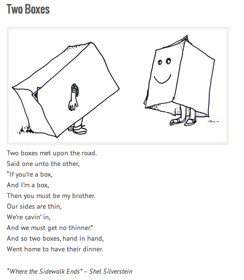

Processing
Click to make lines.
Artist's Statement
Cut-up collaging is the process of taking a piece of text, whether a poem, article, or novel, then physically separating each word and rearranging them randomly to create a new piece of writing. This system was popularized by Dadaists in the early 20th century and was originally met with harsh criticism, but gained popularity and respect over the years. Artists use cut-up collaging to form new meanings of original texts. They are not necessarily searching for conspiracy theories, but are using a new technique that randomizes significance.
This piece takes from the Shel Silverstein poem, "Two Boxes," and splits it into segments that are randomly shown on the screen. The program, coded in Processing, has users create vertical lines that form a colored box. A segment of the text is placed inside the box at a random height. The lines or boxes move across the screen automatically and once they reach the edge of the canvas they are placed back at the beginning. It is coded this way to have a dynamic collaging process. The user selects an order of new segments, but the content of the segments is chosen randomly within the program. Then the order of the "story" is rearranged as the boxes are moved from the end to the beginning. This keeps the content evolving as the program runs and makes the meaning fluid.
As mentioned before, this piece was created using Programming and utilizing the javascript library, P5. The code creates a canvas and waits for the user to click. When the user clicks the canvas, a vertical line appears on the x-coordinate of their click and the vertical line is stored as an object in an array. The poem is broken up into segments that are placed within an array, and when a line is created, a segment is chosen at random and becomes attached to that line at a random y-coordinate. The lines move across the screen through a draw function that wipes and redraws the content. There's a lot more to it, but look into the code and you should understand from the comments what is going on.
Documentation



